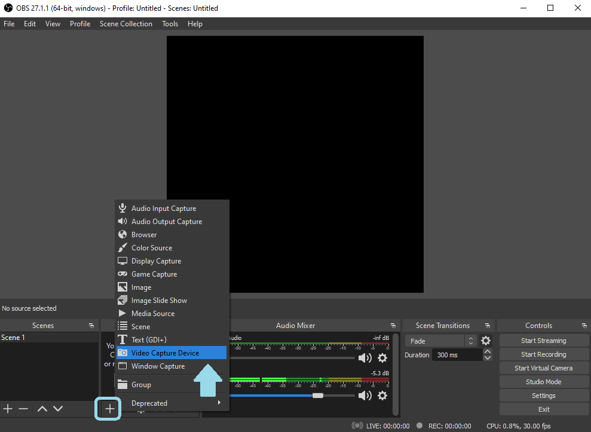
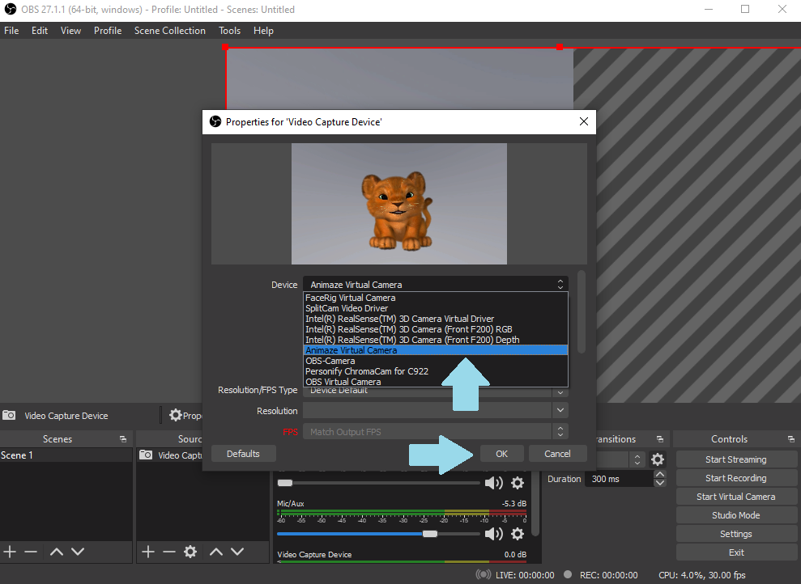
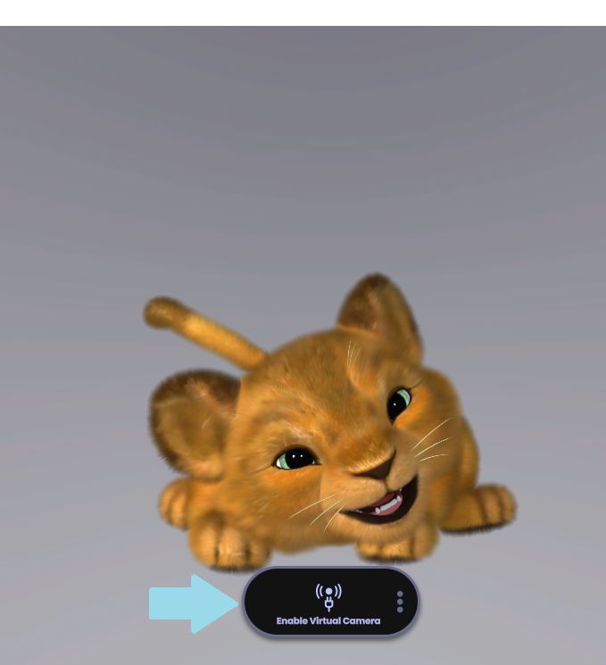
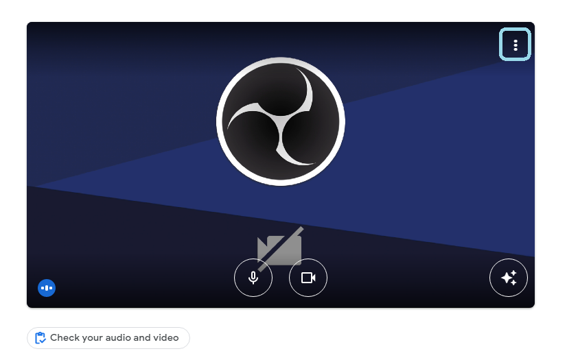
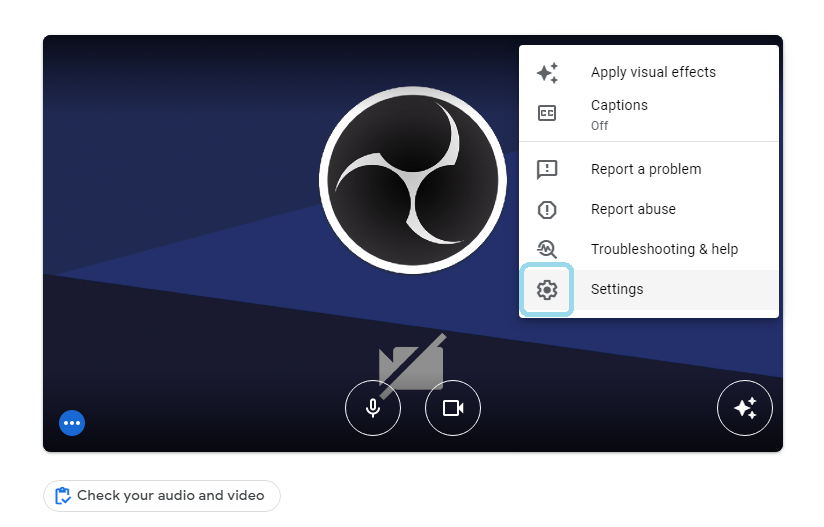
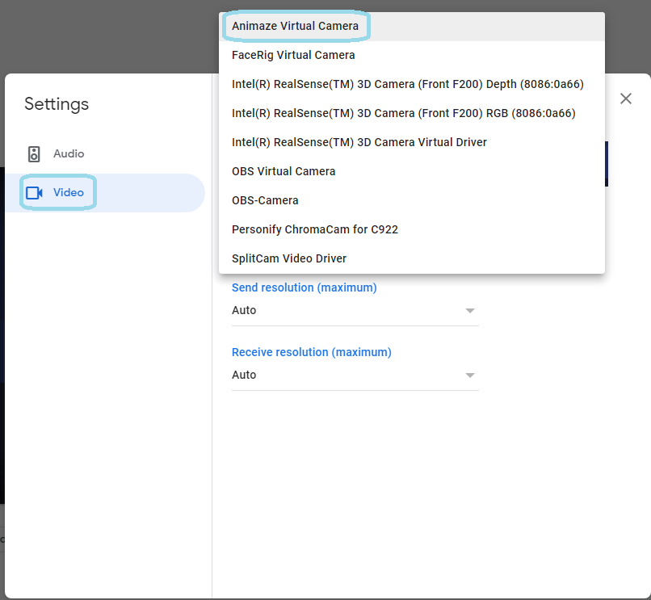
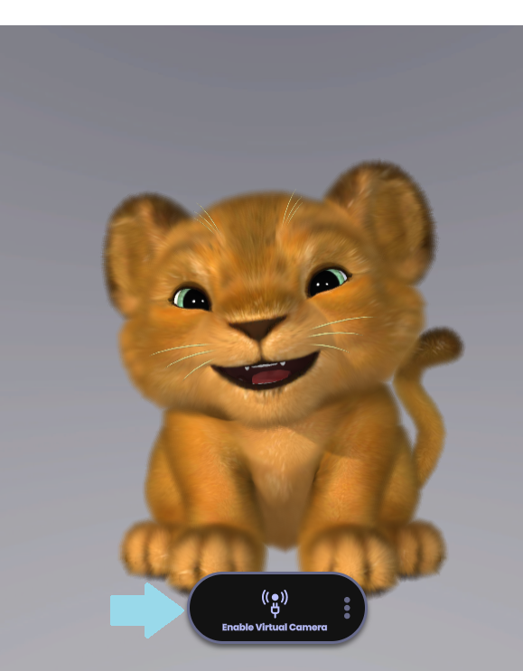
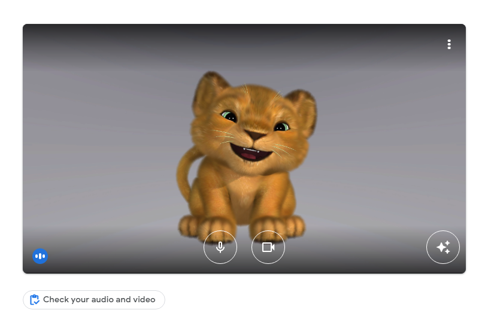

Animaze Virtual Camera
Use the Animaze Virtual Camera to appear as an avatar in video calls and on Discord, Zoom, Skype, Meets, Teams and the likes. You can also stream your favourite games as an avatar on Twitch, YouTube, Facebook and more using streaming software like OBS, and SLOBS.
If the old Animaze Virtual Camera driver didn’t install automatically, or if you do not know how to turn on the new Windows 11 specific Virtual webcam, check out this FAQ.
Starting with Animaze version 1.27.12755 (Summer 2026), Animaze, while continuting to support is original virtual camera, has an aditional, more modern Virtual Camera solution, built specifically for Windows 11 using Windows Media Foundation Virtual Webcam Layer. Using them is similar, just that the devices are named differently in the webcam drop down, and the new one no longer requires running a driver installer, as activating it is done from within the Animaze UI itself.
Follow these steps to stream with the Animaze Virtual Camera (Animaze is compatible with all the major streaming software. For this tutorial, we used OBS as an example):
-
Launch OBS, set up a scene and select Video Capture Device as a source

-
Depending on which of the two you have opted to use, select either the Animaze Virtual Camera or Animaze Vcam Win11 (Windows Virtual Camera) in the Device drop-down list

-
Go to Animaze and click on the Enable Virtual Camera button to start broadcasting to OBS.

Both Animaze virtual cameras are compatible with all major video conferencing platforms. For this example, we used a Google Meets meeting.
-
In Google Meets, open the settings menu by clicking the three-dot button menu.

-
Once you’re in the Settings menu, click on Video. Next, in the Camera drop-down menu select Animaze Virtual Camera or Animaze Vcam Win11 (Windows Virtual Camera) , depending on which one you have opted to bbroadcast to in the Animaze UI.


-
Go to Animaze and click the Enable Virtual Camera button.

-
Once you’ve turned on the Animaze Virtual Camera in Animaze, you will appear as your avatar on the Google Meets web-camera feed.
